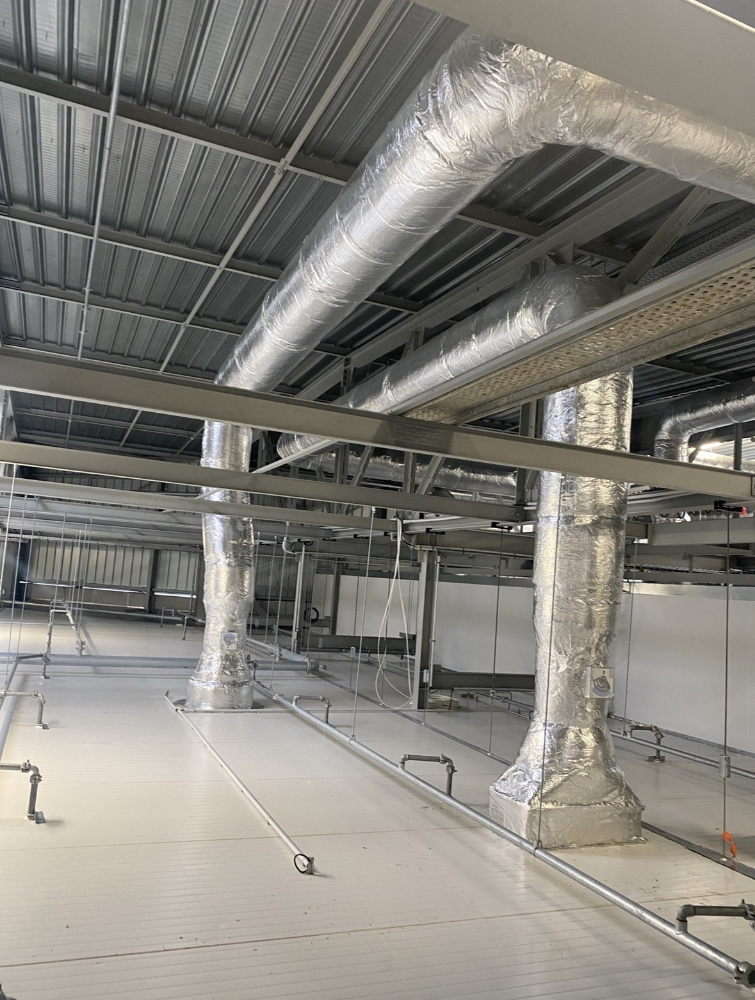
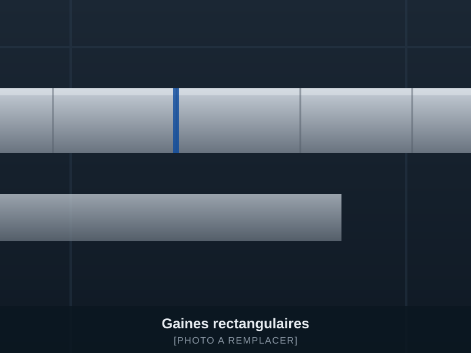
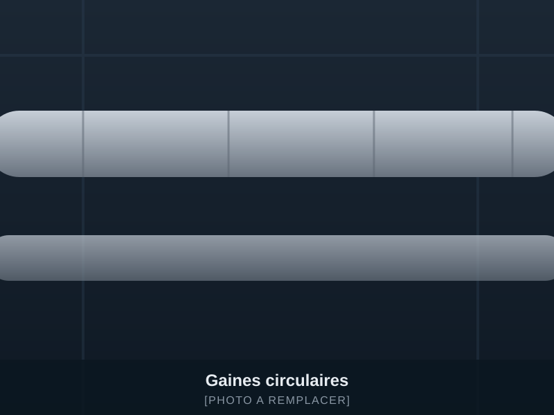
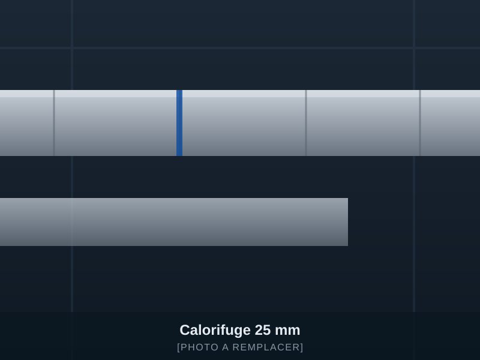
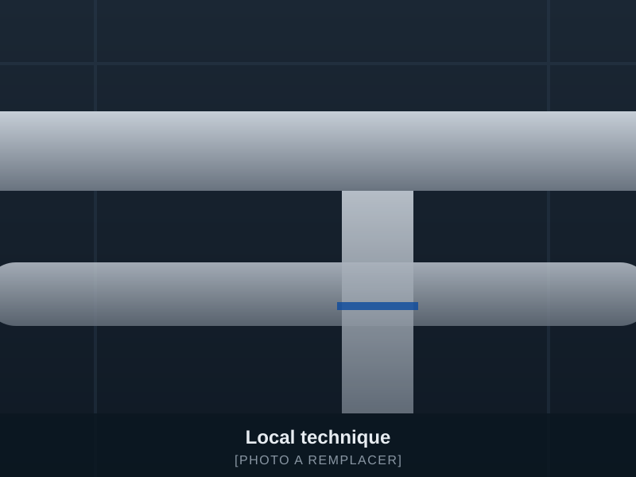
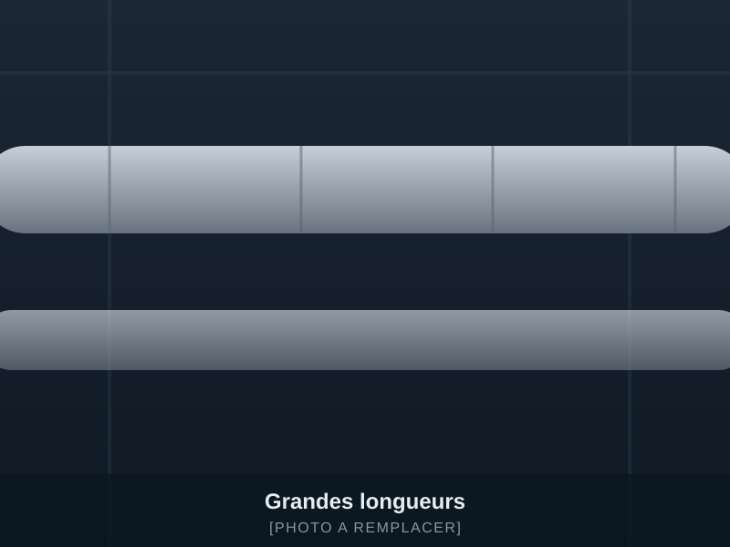
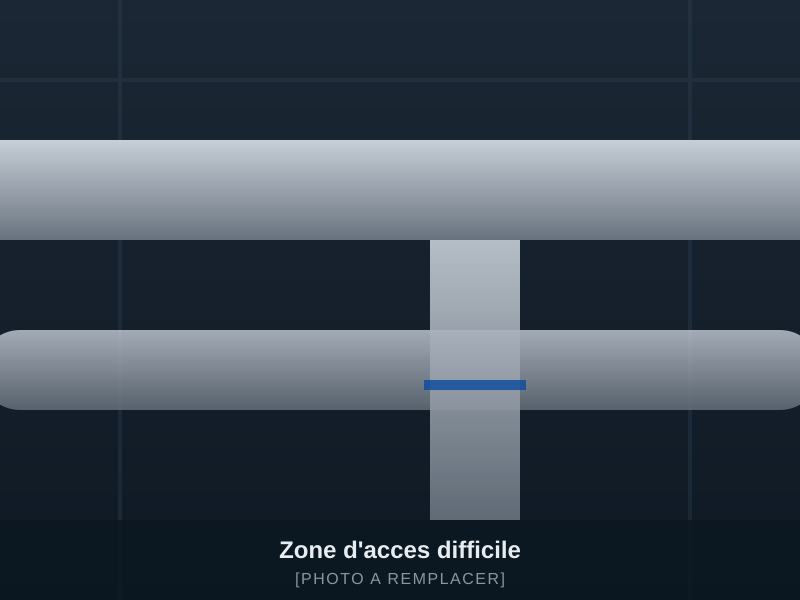
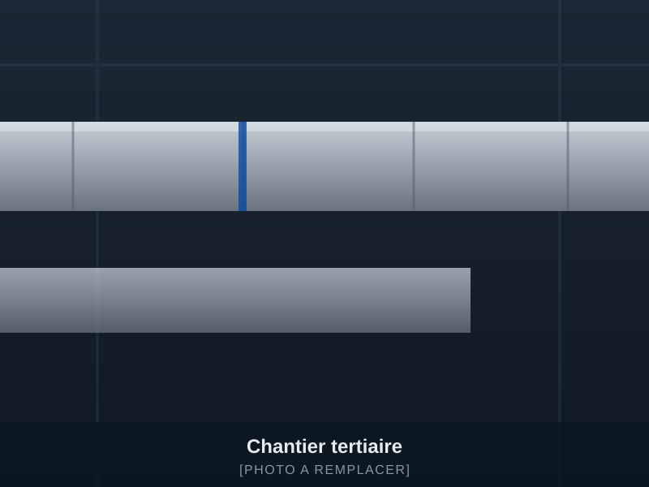
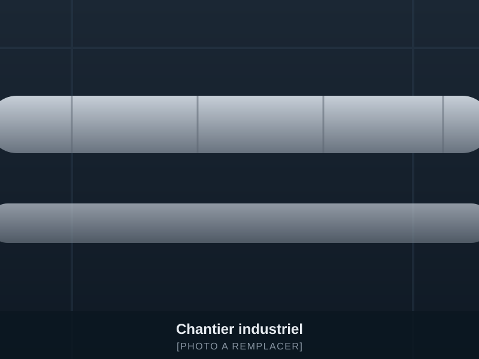

Calorifuge de gaines de ventilation — chantiers tertiaires et industriels
Besoin de calorifugeurs rapidement sur votre chantier ?
RT Calorifuge intervient en renfort ou sur lot complet pour le calorifuge 25 et 50 mm de vos gaines de ventilation, sur chantier tertiaire et industriel.
- Spécialistes du calorifuge de gaines
- Intervention sur chantier professionnel
- Équipe réactive et productive
Nous travaillons uniquement avec des professionnels du bâtiment, du tertiaire et de l'industrie.
Votre situation
Un retard de calorifuge peut bloquer tout le chantier
Tant que les gaines ne sont pas calorifugées, les autres corps d'état attendent. Voici les situations dans lesquelles nous intervenons.
-
Manque de main-d'œuvre
Vous n'avez pas assez de calorifugeurs pour tenir la charge annoncée.
-
Délai de livraison qui approche
La date de réception est fixée et le calorifuge n'est pas terminé.
-
Surcharge de travail
Vos équipes sont déjà engagées sur d'autres chantiers.
-
Sous-traitant indisponible
Votre prestataire habituel ne peut pas venir aux dates prévues.
-
Grande quantité de gaines à terminer
Des centaines de mètres restent à isoler en 25 ou 50 mm.
-
Besoin de renfort ponctuel
Quelques jours ou quelques semaines pour rattraper le planning.
-
Chantier complexe ou difficile d'accès
Hauteur, faux plafonds serrés, gaines verticales, site en exploitation.
-
Reprise de travaux
Un réseau à reprendre, à finir ou à mettre en conformité visuelle.
Transmettez-nous les informations du chantier. Nous vous répondons rapidement sur la faisabilité et nos disponibilités.
Vérifier nos disponibilitésNos interventions
Une entreprise spécialisée uniquement dans le calorifuge des gaines
Nous ne faisons pas de multiservice. Nous faisons du calorifuge de gaines de ventilation, tous les jours, sur des chantiers professionnels.
Ce que change une spécialisation totale
- Une meilleure productivité sur les grandes longueurs
- Moins de temps perdu à l'installation et en cours d'exécution
- Une équipe déjà habituée aux réalités du chantier
- Une prise en charge plus rapide de votre demande
- Une exécution régulière sur l'ensemble du réseau
- Une meilleure adaptation aux réseaux complexes
Vous n'avez pas à expliquer les bases du métier. Vous donnez le périmètre, nous avançons.
Ce sur quoi nous intervenons
Une question sur une épaisseur, un type de gaine ou un réseau particulier ? Envoyez-nous le détail.
Demander une interventionTerrains d'intervention
Des chantiers tertiaires et industriels
Nous intervenons sur des bâtiments professionnels, en construction neuve comme en rénovation de réseaux existants.
Bâtiments tertiaires
Réseaux de ventilation à calorifuger sur l'ensemble des niveaux.
Bureaux
Soufflage et reprise en faux plafond, 25 ou 50 mm.
Commerces
Réseaux apparents ou dissimulés, contraintes d'exploitation.
Centres commerciaux
Grandes longueurs, coordination avec les autres lots.
Hôtels
Gaines verticales, locaux techniques, zones occupées.
Établissements de santé
Réseaux techniques exigeants et zones sensibles.
Établissements scolaires
Interventions calées sur les périodes de travaux.
Bâtiments publics
Chantiers cadrés, consignes et accès stricts.
Entrepôts
Réseaux en hauteur et grandes longueurs continues.
Ateliers
Extraction et soufflage en environnement de travail.
Usines
Zones de production, réseaux industriels, contraintes fortes.
Plateformes logistiques
Volumes importants, cadence d'exécution soutenue.
Locaux techniques
Réseaux denses, piquages, accès réduits.
Rénovation de réseaux existants
Dépose, reprise et remise en état du calorifuge.
Votre chantier figure dans cette liste ? Indiquez-nous la ville et les dates.
Vérifier nos disponibilitésModes d'intervention
Trois façons de travailler ensemble
-
01
Renfort de vos équipes
Vous avez déjà des équipes sur place mais vous manquez de main-d'œuvre pour tenir le planning. Nous intervenons en renfort sur une durée définie.
-
02
Prise en charge d'une zone
Vous nous confiez un étage, un réseau, une zone technique ou une partie du chantier à terminer.
-
03
Lot complet de calorifuge
Nous étudions le volume, les contraintes, le planning et les documents techniques pour organiser l'intervention.
Dites-nous simplement ce dont vous avez besoin : renfort, zone ou lot complet.
Obtenir un devisPourquoi RT Calorifuge
Ce que vous attendez réellement d'une équipe de calorifugeurs
Pas de promesses invérifiables. Des points concrets, ceux qui comptent sur un chantier.
Équipe spécialisée
Uniquement du calorifuge de gaines de ventilation.
Bonne cadence d'exécution
Une production régulière sur la durée de l'intervention.
Respect du planning convenu
Les dates et le périmètre sont fixés avant de démarrer.
Autonomie sur chantier
L'équipe s'organise seule une fois le périmètre défini.
Respect des consignes
Nous appliquons les consignes du conducteur de travaux et du site.
Travail propre
Poste de travail rangé, chutes évacuées, zone laissée nette.
Communication claire
Un interlocuteur, des échanges simples, sans allers-retours inutiles.
Remontée rapide des blocages
Réseau non terminé, accès fermé, gaine non prête : vous êtes prévenu tout de suite.
Conditions contraignantes
Hauteur, accès réduit, site en exploitation, coactivité.
Suivi simple de l'avancement
Un point régulier sur ce qui est fait et ce qui reste.
Prêt à voir si nous pouvons intervenir sur vos dates ?
Vérifier nos disponibilitésMéthode
Comment se déroule une demande
Quatre étapes, sans procédure inutile.
-
1
Vous nous contactez
Envoyez-nous l'adresse, les dates, le type de chantier et votre besoin.
-
2
Vous transmettez les éléments
Plans, métrés, photos, épaisseur d'isolant, état d'avancement et contraintes d'accès.
-
3
Nous étudions la demande
Nous vérifions la faisabilité, l'organisation nécessaire et nos disponibilités.
-
4
Nous intervenons
L'équipe rejoint le chantier avec un périmètre et des objectifs clairement définis.
Vous pouvez démarrer à l'étape 1 en moins de deux minutes.
Envoyer les informations du chantierRéalisations
Nos chantiers de calorifuge de gaines
Images avant, pendant et après intervention. [PHOTOS DES RÉALISATIONS — à remplacer par vos propres photographies]
-

BureauxGaines rectangulaires · 25 mm · Réseau de soufflage -

CommerceGaines circulaires · 25 mm · Reprise d'air -

BureauxFaux plafond · 25 mm · Soufflage et reprise -
Site industrielGaines rectangulaires · 50 mm · Extraction
-

Local techniqueRéseau dense · 50 mm · Soufflage et reprise -

Plateforme logistiqueGrandes longueurs · Gaines circulaires · 25 mm -

Zone contrainteAccès réduit · Gaine verticale · 50 mm -

Chantier tertiaireFaux plafond · 25 mm · Réseau de soufflage -

Zone de productionGaines circulaires · 50 mm · Extraction
Un réseau comparable à traiter ? Envoyez quelques photos, nous vous disons rapidement ce que nous pouvons faire.
Envoyer les photos du chantierRenfort rapide
Votre chantier a besoin de renfort rapidement ?
Envoyez-nous les informations essentielles. Nous vous indiquons rapidement si nous pouvons intervenir.
Informations à nous transmettre
- Ville du chantier
- Date souhaitée
- Durée estimée
- Nombre de personnes recherché
- Épaisseur 25 ou 50 mm
- Type et quantité de gaines
- Hauteur ou contraintes d'accès
- Photos, métrés ou plans disponibles
Vous n'avez pas tout ? Envoyez déjà la ville, la date et deux photos.
Questions fréquentes
Vos questions avant de nous contacter
Intervenez-vous en urgence ?
Oui, selon nos disponibilités du moment. Indiquez-nous la ville, la date et le volume : nous vous répondons rapidement sur notre capacité à intervenir.
Travaillez-vous uniquement avec les professionnels ?
Oui. Nous travaillons avec les entreprises de génie climatique et de CVC, les installateurs de ventilation, les entreprises générales, les sous-traitants du bâtiment et les exploitants de bâtiments tertiaires ou industriels. Nous n'intervenons pas chez les particuliers.
Pouvez-vous intervenir en renfort de nos équipes ?
Oui. C'est l'un de nos trois modes d'intervention. Vous gardez la main sur le chantier, nous apportons la main-d'œuvre spécialisée sur une durée définie.
Réalisez-vous du calorifuge en 25 mm et en 50 mm ?
Oui, les deux épaisseurs font partie de notre quotidien, sur gaines rectangulaires comme circulaires.
Travaillez-vous sur des gaines rondes et rectangulaires ?
Oui. Nous traitons les réseaux de soufflage, de reprise, d'extraction et de désenfumage, en circulaire comme en rectangulaire.
Pouvez-vous prendre en charge seulement une partie du chantier ?
Oui. Un étage, un réseau, une zone technique ou une partie de réseau à terminer : le périmètre est défini avec vous avant le démarrage.
Quelles informations faut-il envoyer pour obtenir un devis ?
Au minimum : la ville du chantier, la date souhaitée, l'épaisseur (25 ou 50 mm), le type de gaines et une estimation du métrage. Si vous les avez : plans, métrés, photos, contraintes d'accès et état d'avancement.
Pouvez-vous travailler à partir de plans ou de métrés ?
Oui. Envoyez vos plans ou métrés via le formulaire ou par e-mail, nous étudions la demande sur cette base.
Intervenez-vous sur des sites industriels ?
Oui : usines, ateliers, entrepôts, plateformes logistiques, zones de production et locaux techniques, y compris sur sites en exploitation avec consignes spécifiques.
Pouvez-vous intervenir dans des zones difficiles d'accès ?
Oui : hauteur, faux plafonds serrés, gaines verticales, locaux techniques denses, coactivité. Précisez-nous les contraintes dès la demande pour que nous puissions organiser l'intervention.
Quelle est votre zone géographique d'intervention ?
Notre zone d'intervention : [ZONE D'INTERVENTION]. Pour un chantier situé en dehors de cette zone, contactez-nous : nous étudions la demande au cas par cas selon la durée et le volume.
Comment connaître vos disponibilités ?
Le plus rapide est de nous appeler au [NUMÉRO DE TÉLÉPHONE] ou de remplir le formulaire ci-dessous avec la ville, les dates et le volume estimé.
Votre question n'est pas dans la liste ? Posez-la directement.
Demander une interventionContact
Vérifier nos disponibilités
Vous n'avez pas toutes les informations ? Envoyez-nous déjà l'adresse du chantier, la date souhaitée et quelques photos.
Votre demande a bien été transmise.
RT Calorifuge vous recontactera après étude des informations.
Besoin d'une réponse immédiate ? Appeler [06 52 41 17 49]